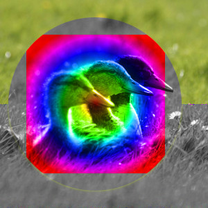

This group contains layer modes that blend layers using properties of the HSV or HSL color models.
- HSV Hue
-
HSV Hue mode uses the Hue of the upper layer and the Saturation and Value of the lower layer to form the resulting image. However, if the Saturation of the upper layer is zero, the Hue is taken from the lower layer, too.
- HSV Saturation
-
Figure 8.38. Example for layer mode “HSV Saturation”

Top layer at 100% opacity using “HSV Saturation” mode.
HSV Saturation mode uses the Saturation of the upper layer and the Hue and Value of the lower layer to form the resulting image.
- HSL Color
-
Figure 8.39. Example for layer mode “HSL Color”

Top layer at 100% opacity using “HSL Color” mode.
HSL Color mode uses the Hue and Saturation of the upper layer and the Lightness of the lower layer to form the resulting image.
- HSV Value
-
HSV Value mode uses the Value of the upper layer and the Saturation and Hue of the lower layer to form the resulting image. You can use this mode to reveal details in dark and light areas of an image without changing the Saturation.